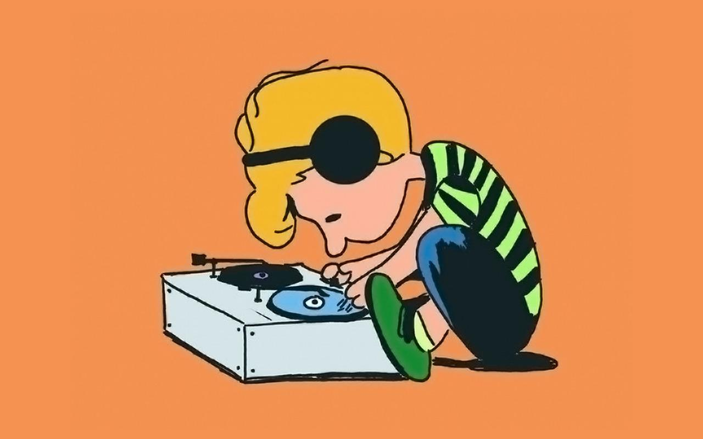
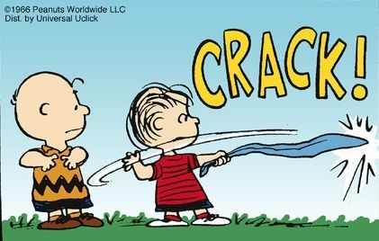
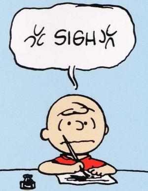

SCHORDER: Did you know that Charlie Brown has never pitched a winning
baseball game? Never been able to keep a kite in the air? Never
won a game of checkers? And never successfully punted a
football? Sometimes I marvel at his consistency.


LINUS:
In examining a work such as Peter Rabbit, it is important that the superficial characteristics of its deceptively simple plot should not be allowed to blind the reader to the more substantial fabric of its deeper motivations. In this report, I plan to discuss the sociological implications of family pressures so great as to drive an otherwise moral rabbit to perform acts of thievery which he consciously knew were against the law. I also hope to explore the personality of Mr. MacGregor in his conflicting roles as farmer and humanitarian. Peter Rabbit is established from the start as a benevolent hero...

CHARLIE BROWN:
IF I START WRITING NOW
WHEN I'M NOT REALLY RESTED
IT COULD UPSET MY THINKING
WHICH IS NOT GOOD AT ALL.
I'LL GET A FRESH START TOMORROW
AND IT'S NOT DUE TILL WEDNESDAY,
SO I'LL HAVE ALL OF TUESDAY,
UNLESS SOMETHING SHOULD HAPPEN.
WHY DOES THIS ALWAYS HAPPEN
I SHOULD BE OUTSIDE PLAYING,
GETTING FRESH AIR AND SUNSHINE,
I WORK BEST UNDER PRESSURE
AND THERE'LL BE LOTS OF PRESSURE
IF I WAIT TILL TOMORROW,
I SHOULD START WRITING NOW.
BUT IF I START WRITING NOW WHEN
I'M NOT REALLY RESTED,
IT COULD UPSET MY THINKING WHICH IS NO GOOD AT ALL.